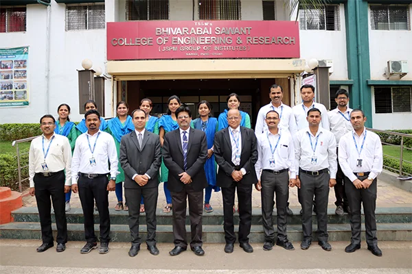

Engineering Science

The Department of Engineering Sciences is working as a supporting department to all the Engineering Departments. Mathematics and Mathematical Sciences are mathematically rich subjects and they also possess extensive range ofapplications in many other fields such as: Physics, Chemistry, Engineering and Industry, Medical Sciences, Ecology,Management, Economics and Finance, Military Applications, and many others.
Vision
"To develop competent engineers who can apply basic knowledge of engineering
and science to serve the society."
Mission
"To instill the importance of Basic Science and develop natural talent for
Engineering and Technology which in turn shall mould the student into a com
petent professional."
Program Outcomes
- PO1. Engineering knowledge: Apply the knowledge of mathematics, science, engineering
fundamentals, and an engineering specialization to the solution of complex engineering
problems.
- PO2. Problem analysis: Identify, formulate, research literature, and analyze complex
engineering problems reaching substantiated conclusions using first principles of
mathematics, natural sciences, and engineering sciences.
- PO3. Design/development of solutions: Design solutions for complex engineering problems
and design system components or processes that meet the specified needs with appropriate
consideration for the public health and safety, and the cultural, societal, and
environmental considerations.
- PO4. Conduct investigations of complex problems: Use research-based knowledge and research
methods including design of experiments, analysis and interpretation of data, and synthesis of
the information to provide valid conclusions.
- PO5. Modern tool usage: Create, select, and apply appropriate techniques, resources, and modern
engineering and IT tools including prediction and modeling to complex engineering activities with
an understanding of the limitations.
- PO6. The engineer and society: Apply reasoning informed by the contextual knowledge to assess societal,
health, safety, legal and cultural issues and the consequent responsibilities relevant to the
professional engineering practice.
- PO7. Environment and sustainability: Understand the impact of the professional engineering solutions in
societal and environmental contexts, and demonstrate the knowledge of, and need for sustainable development.
- PO8. Ethics: Apply ethical principles and commit to professional ethics and responsibilities and norms of
the engineering practice.
- PO9. Individual and team work: Function effectively as an individual, and as a member or leader in diverse
teams, and in multidisciplinary settings.
- PO10. Communication: Communicate effectively on complex engineering activities with the engineering community
and with society at large, such as, being able to comprehend and write effective reports and design documentation,
make effective presentations, and give and receive clear instructions.
- PO11. Project management and finance: Demonstrate knowledge and understanding of the engineering and management
principles and apply these to one’s own work, as a member and leader in a team, to manage projects and in
multidisciplinary environments.
- PO12. Life-long learning: Recognize the need for, and have the preparation and ability to engage in independent
and lifelong learning in the broadest context of technological change.